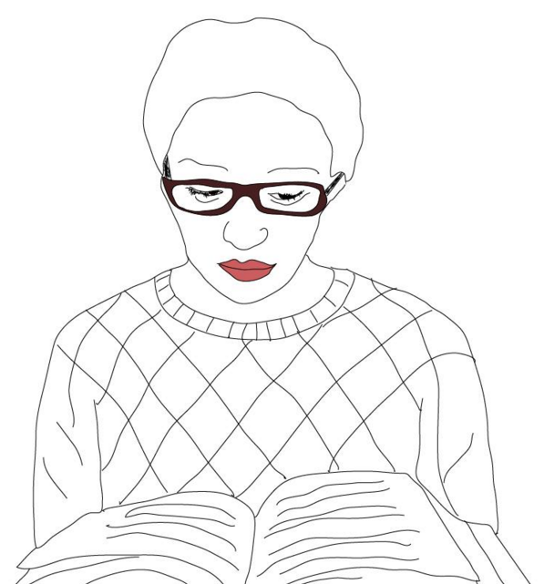

Sobre mí
¡Hola! mi nombre es Jessica Funes, soy diseñadora, me gusta mucho nadar; soy crawlista, aunque últimamente no he practicado, estudio chino mandarín, trabajo de freelance sobre todo en la creación de medios audiovisuales, me gusta mucho sembrar y hacer mis propios productos para no generar basura. Tengo dos gatos y un novio muy guapo, este blog lo cree como práctica del uso del framework Foundation.